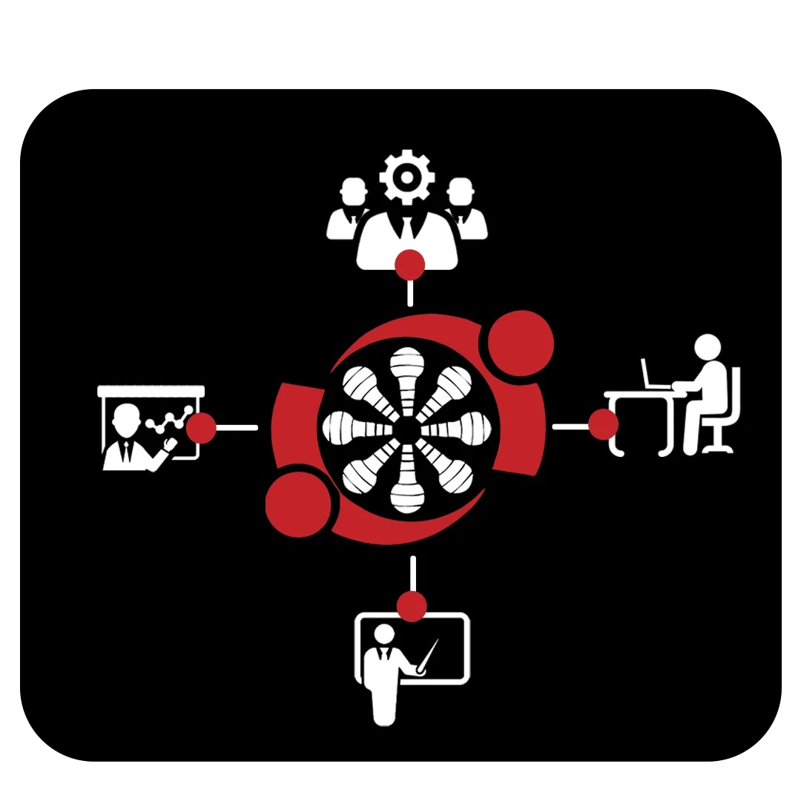
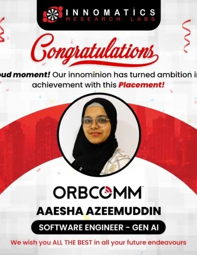
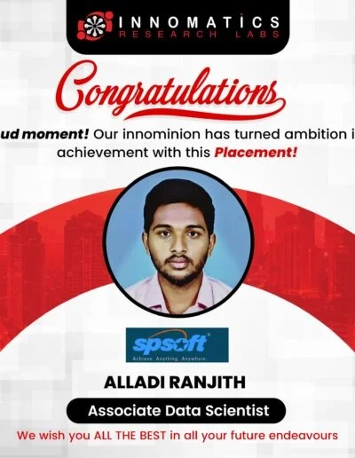
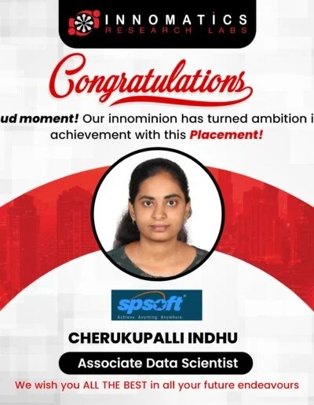
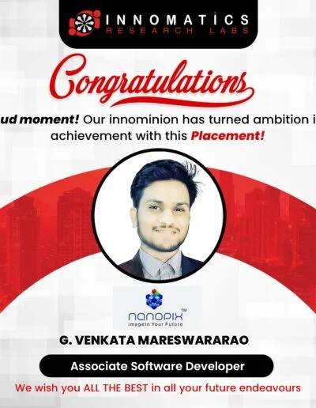

Innomatics Research Labs is a pioneer in “Transforming Careers and Lives” of individuals in the Digital Space by catering advanced training on NASSCOM Future skills prime Certified Data Science, Python, Predictive Analytics Modeler, Machine Learning, Artificial Intelligence (AI), Generative AI, Full-stack web development and Career Launching program for students who are willing to showcase their skills in the competitive job market with valuable credentials, and also can complete courses with a certificate.
NASSCOM Futureskills Prime Registered Business Partner
As an authorized NASSCOM FutureSkills Prime Training Partner dedicated to providing practical and real-world learning experiences. Our training includes case studies and business challenges to ensure job-ready skills. We also organize regular hackathons, workshops, and meetups to enhance learning and productivity. With a dedicated placement team, we partner with over 100 companies to match them with skilled professionals, helping businesses grow while shaping successful careers.
Best Edtech company
Recognized by Times of India as the Best Training Institute in Hyderabad for Data Science & Digital Marketing, we have trained and placed 10,000+ students. With 350+ batches, 70+ hackathons, 500+ industry experts, 500+ webinars, and 500+ hiring partners, we focus on practical learning and skill development through advanced classrooms and modern training methods.
What we are?
Global Leaders in training
Practical oriented approach
Hands-on projects & Internship
100% Placement Assistance
Trending Courses of 2025
NASSCOM Futureskills Prime Certified Data Science
This is a great choice for tech geeks, students, working professionals and aspiring data scientists who want to upskill and build a better foundation is the stream of Data Science.
Full Stack Development
Learn the right skills to break into a development career & advance yourself as a full-stack Developer. It includes Frontend, Backend, databases, debugging & testing.
Generative AI
Generative AI Course at Innomatics is perfect for students, job seekers, entrepreneurs, and professionals who want to learn the latest AI tools and skills to grow in their careers.
Advantages of training at Innomatics
Flexible Online Live and Classroom Training
100% Internship guarantee program
Dedicated Placement vertical
Mastery level certifications that are globally accepted
Backup Classes & Lifetime LMS access
Completely Practical Oriented Approach
Hands-on training on the capstone projects
Bi-weekly connects from industry experts
Domain Teach back and Reverse Presentations
Free Technical Support & Individual Career Counselling
Expert mentoring Weekly Tests & Assignments
Mock-up Exams, and Interviews
Meet-ups, Workshops, Hackathons & Conferences
Exclusive programs for Non-IT professionals
Let’s Watch a Video Bite From Our Institute
Why People Choose Our Training
Expert Trainers
Capstone Projects
Inhouse Internship
Placements

Innomatics explored all over India to get the best trainers and succeeded with it. We have a pool of trainers working with highly qualified business partners and fortune companies to provide advanced and comprehensive training.
They curate the course content with an eye on the industry needs and standards to make students skilful and champions in solving the complex challenges of the industry.
Meet Our Experts
9951666670
A few reviews from our students
Amarnath Choudary
HEY! I am Amar student of the innomatics research labs .. I love the innomatics research lab because the mentors and trainers help me a lot in any query in the course. If anyone looking for data science in the market, I can say innomatics is one of the best institutes.
Sindhuja
Innomatics is one of the best places to gain knowledge on data science and also get certified through Nasscom which can help in getting the right jobs from top companies. Tutors will teach you with real-time examples to understand the concepts in an easy way. Special thanks to Vaibav Sir who taught each concept very clearly.
Vamshi Raj
Innomatics Research Labs is the Best platform to transform our career, here I have done a Data analytics course, and was recently placed in a company.Here they provides Excellent quality education and practice or doubt Sessions. and conducts so many Hackathons to enhance our skills. I personally like the LMS facility which is lifetime. Here we can see all our class recordings throughout the course.Faculty and staff are so friendly. They will guide us until we get placed.
Pramodha
I am incredibly grateful to my institute for the invaluable support they provided in my job search journey. The guidance and resources they offered were instrumental in helping me secure a job. I want to express my special thanks to our HR executive, Sai Kiran Rodda, whose assistance was pivotal. His dedication and expertise made the entire process seamless, enabling me to transition smoothly into my new role. I highly recommend this institute to anyone seeking not only quality education but also excellent career support. Thank you for making a significant difference in my life!
Here Are Some Of Our Success Stories




Read Latest Business News & Blog updates
OOPS Concepts in Python: Part 1
Class, Objects, Constructor, Methods in Python :...
Real-world Applications of Data Science in Today’s Fast-paced Environment